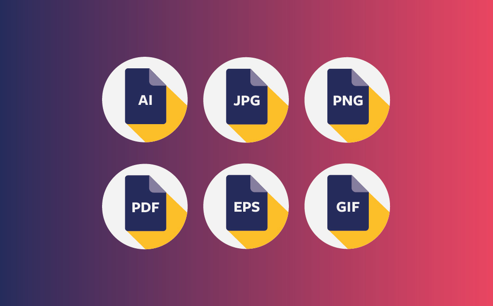

Hoe werken bitmap en vectorafbeeldingen?
bitmapafbeelding
Als een afbeelding bestaat uit pixels noem je het een bitmapafbeelding. Je hebt 2 nadelen van een bitmapafbeelding, maar die nadelen zijn ook belangrijke eigenschappen. De eerste kenmerk is dat een bitmapafbeelding veel opslag in beslag neemt. Het tweede kenmerk is als je gaat inzoomen dat je allemaal pixels ziet. Als je op het plaatje klikt krijg je meer uitleg.
vectorafbeelding
Een andere manier hoe je een foto kunt opbouwen, is hoe de vormen van je is opgebouwd. De naam daarvan is een vectorafbeelding. Bij een vectorafbeelding worden alle kenmerken opgeslagen bijvoorbeeld de locatie, de kleur en de grootte. Het voordeel van een vectorafbeelding is at je het makkelijk kunt aanpassen. Het nadeel is dat het alleen in vormen is. Een foto die digitaal is bestaat niet vormen, maar uit kleurtinten. Dan kunn je hem niet opslaan als vector.
geluidsfragmenten
Geluid moet ook op je computer. Je computer heeft ook speakers dat geluid afspeelt. Je kunt met een microfoon geluid opnemen. Een microfoon kan van trillingen een elektrisch signaal maken. Die signalen zet je computer om naar digatalen waarden. De naam van dit word samplen genoemd. Op 1 moment van het samplen word de sterkte van het geluid gemeten.